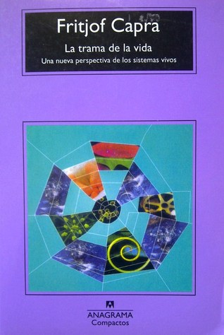

La trama de la vida. Una nueva perspectiva de los sistemas vivos
Reseña por Jorge I. Zuluaga

Ver detalles · Ver reseña en GoodReads (necesita cuenta)
Este libro tiene 20 años de escrito y casi todo lo que dice sobre los sistemas complejos y su relación con la vida, la cognición y la sociedad debe ser —y posiblemente será— verdad por mucho tiempo.
Conocí este libro tras la recomendación de una amiga en un club de lectura, en el que manifesté cierto interés por leer libros sobre la naturaleza de la consciencia o, mejor, sobre la investigación relacionada con ella; la consciencia sigue siendo un misterio. ¡Gracias a Diana por su recomendación! ¡Muy acertada!
Conocía solo de oídas a Fritjof Capra por su otro *best seller*, "El tao de la física", un libro que nunca produjo en mí mucha curiosidad por pensar que se trataba de otro esfuerzo —infructuoso, según mi parecer— de relacionar algunas filosofías de Oriente con los descubrimientos de la física del siglo XX. Soy físico de profesión y estoy acostumbrado a que se abuse un poco del lenguaje y las ideas de la teoría cuántica para cuanta magufada inventan autores sin muchos principios.
Después de leer "La trama de la vida" y sin animarme todavía a abordar "El tao de la física", creo que me equivoqué con Fritjof Capra. Si este último libro está tan bien escrito y es tan serio en su aproximación y originalidad a los temas que aborda como lo es "La trama de la vida", tocará respirar y meterle el diente a "El tao de la física".
"La trama de la vida" es una ingeniosa y completa síntesis de algunos de los más interesantes resultados —al menos de los que se conocían en el año en el que vio la luz el libro, poco antes del cambio de siglo— de lo que se ha dado en llamar teoría de sistemas, pensamiento sistémico, pensamiento en redes, sistemas complejos, ecología profunda y sistemas dinámicos, entre muchas otras denominaciones que no alcanzan, aun después de 20 años de esta genial síntesis, a converger en una sola forma de llamar a estos esfuerzos intelectuales. La naturaleza de las ideas que rodean esta aparentemente innombrable área de la ciencia, y en la que convergen matemáticas, física, biología, neurociencias, ecología, química y sociología, entre muchas otras disciplinas, puede ser justamente la razón por la que no se ha alcanzado un consenso sobre cómo llamarla, y tal vez sea mejor así.
Como científico, había tenido contacto en el pasado, aunque también solo de oídas —debo reconocerlo hoy con un poco de vergüenza—, con los trabajos de científicos como Ilya Prigogine, Humberto Maturana, Francisco Varela, John von Neumann o Benoit Mandelbrot, todos ellos relacionados con la naturaleza de la vida, el pensamiento, la cognición y las matemáticas de la naturaleza. Pero fue solo a través de este libro que conseguí familiarizarme con las ideas centrales de sus aportes más importantes y comprender en realidad —por fin— la verdadera relevancia y el carácter revolucionario de algunas de sus ideas.
También conocí, por la lectura de este libro, el trabajo de científicos que nunca había oído mencionar: Gregory Bateson, Ludwig von Bertalanffy, Norbert Wiener o Warren McCulloch, de los que ahora quiero saber mucho más.
De pasta a pasta, este libro ha resultado una verdadera fuente de descubrimientos para mí.
El libro está muy bien escrito, es ameno y agradable de leer. Me gustó mucho, por ejemplo, la reiteración de las ideas: hay párrafos regados por el libro que sentí eran copias de otros anteriores. Al leerlos con más detenimiento, descubrí que en realidad se trataba de un esfuerzo de reiteración muy importante y acertado cuando se trata de transmitir ideas relativamente complejas como las que busca exponer este libro.
El contenido general del libro, sin embargo, no es del todo simple.
Antes de comenzar, pensé que el autor presentaría unas reflexiones muy generales sobre la manera como la vida está conectada a todos los niveles y de cómo esa conexión ayuda a explicar su naturaleza o su distinción de lo no vivo. Lo que descubrí en realidad fue un texto que hace una revisión, relativamente rigurosa pero aún así comprensible, de algunos conceptos difíciles que están en el corazón del pensamiento sistémico y la teoría de la complejidad contemporánea: autopoiesis, homeostasis, autorregulación, bucles de retroalimentación, sistemas disipativos, entropía, atractor, dimensión fractal, caos y emergencia, para citar solo algunos ejemplos.
Me gustó mucho la síntesis que hace en uno de sus capítulos de la historia de la vida en la Tierra. Si bien la cronología, e incluso algunos eventos importantes de esa historia, han cambiado por la investigación paleontológica, paleoantropológica y arqueológica de los últimos 20 años, la aproximación que hace Capra, que él mismo señala se basa en la que realizaron Lynn Margulis y Dorion Sagan en su libro "Microcosmos", es sencillamente genial. Genial por lo sintética y por la originalidad de algunas descripciones, muy en sintonía con las ideas que expone el libro.
Venía, insisto, por un libro que me hablara sobre la consciencia, pero terminé leyendo un texto que amplió mucho más mis intereses por los fenómenos complejos, en particular por aquellos que ocurren en la vida a todos los niveles.
De particular interés para mí terminó siendo la teoría sobre la cognición que desarrollaron primero Gregory Bateson, como parte del movimiento cibernético, y después Humberto Maturana, en medio de sus investigaciones sobre la naturaleza de la vida. Los elementos generales de ambas teorías son expuestos por Fritjof Capra, especialmente en la última parte del libro.
Según las teorías de estos dos científicos —o de estas dos escuelas de pensamiento—, la cognición es el proceso mismo de la vida. Lo que está vivo "piensa", lo que "piensa" está vivo. Y esto no importa cuán pequeño o grande sea: desde la escala de la bacteria más pequeña a la de un complejo *Homo sapiens*.
Abrazar esta idea, o mejor, comprenderla —porque no se trata aquí de tener fe en las enseñanzas de unos gurús, tanto Bateson como Maturana y sus colaboradores soportan su teoría en evidencias— podría ayudar a resolver algunas de las más importantes preguntas sobre la naturaleza de la vida, a saber: qué es lo que distingue lo vivo de lo no vivo, qué es la cognición, el pensamiento —la suposición de que se pueden considerar análogos es solo mía— y por qué, según las ideas convencionales de la biología, surgió únicamente en algunas especies de los millones que han existido en la Tierra. Si admitimos, como proponen Maturana y Bateson, que la cognición es el proceso básico de la vida, habría un "continuo mental" entre el organismo más pequeño y nosotros.
Esta idea es sencillamente fascinante. Además, contribuye a seguir haciéndonos menos especiales como especie, un esfuerzo que siempre he considerado muy importante.
Yo sé que estas ideas pueden sonar extrañas, que fácilmente se puede pensar que sucumbí a una forma de pensamiento mágico o pseudocientífico, pero no es así.
Las ideas de Bateson y Maturana pertenecen hoy al acervo del conocimiento científico; fueron expuestas y sometidas a debate en publicaciones revisadas por pares y están hoy en libros ampliamente leídos y citados. Esto tampoco garantiza que deban ser creídas sin mucho escepticismo, pero sí que al menos la ciencia, el pensamiento sistémico, el pensamiento en redes y la teoría de la complejidad están considerando esta posibilidad como parte de la solución a uno de los mayores misterios con los que nos hemos topado en la historia.
"La trama de la vida" es un libro de la década de los 90, un tiempo en el que se conocía ya muy bien el deterioro del medio ambiente producido por la actividad humana y las consecuencias que tendría a mediano plazo sobre la biosfera, y en especial sobre la continuidad de nuestra forma de vida. Sin embargo, en aquel entonces, el sentido de urgencia pública que estamos viviendo en el presente y el alcance del mensaje ecológico conseguido hoy gracias al surgimiento de las redes sociales, pero también al agravamiento de la emergencia, no era tan extenso y profundo. Aun así, leyendo algunos de sus capítulos y en particular el epílogo, que está convenientemente titulado "Alfabetización ecológica", me doy cuenta de la importancia de que muchas más personas leamos un libro como este.
Tal vez comprendiendo la fascinante ciencia de los sistemas complejos, una ciencia que ya no es mecanicista, ni reduccionista, ni simplonamente materialista, y que tampoco está afectada por el pensamiento mágico o el wishful thinking de algunas formas edulcoradas de filosofía o misticismo, tal vez así podríamos muchas más personas entender lo que está en juego con la crisis ambiental que vivimos.
Hay que leer "La trama de la vida". No hay opción.